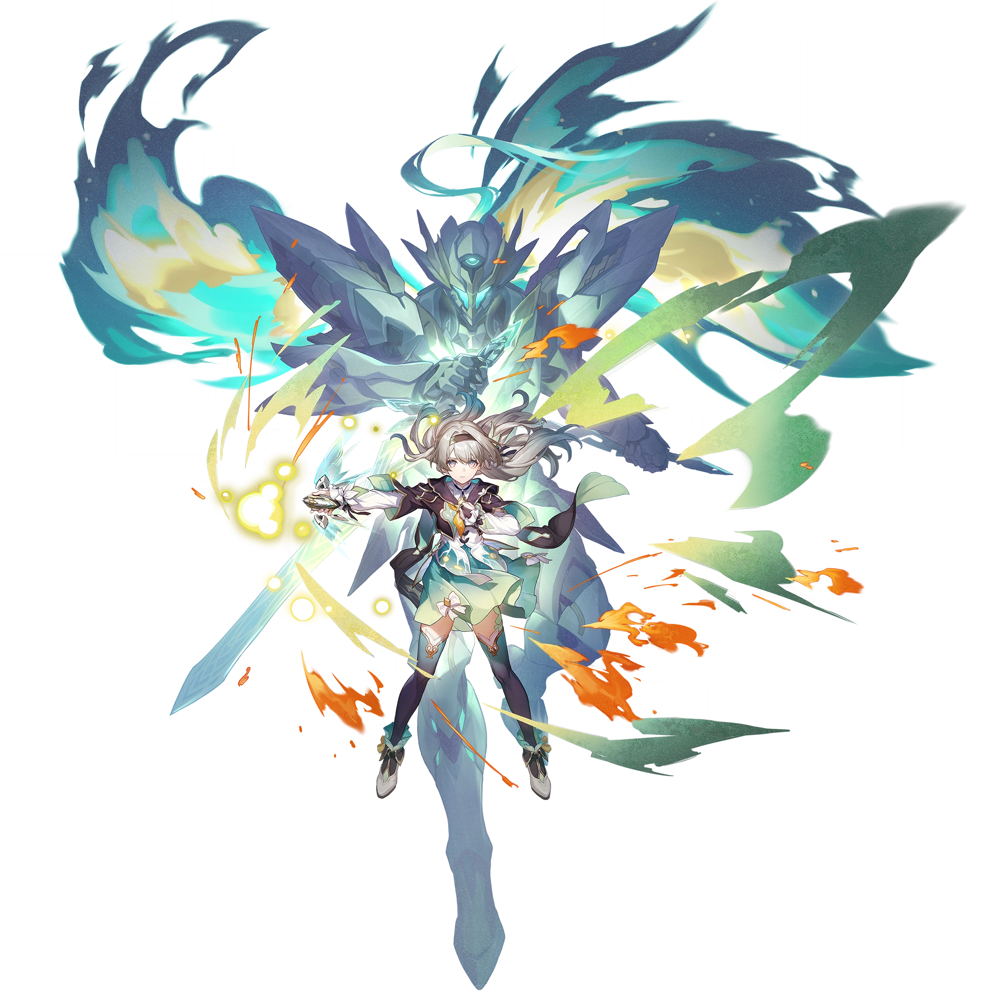
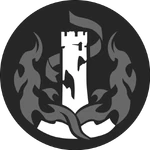

Descripcion del personaje
Firefly es un personaje jugable en Honkai: Star Rail, perteneciente a los Stellaron Hunters. Es un guerrero mecanizado que utiliza una armadura conocida como "SAM".
Firefly es un personaje con una historia marcada por la tragedia y la lucha por la identidad. Creada como un arma contra la Swarm, su existencia es breve, ya que su vida se desarrolla a un ritmo acelerado. A pesar de ser un guerrero mecanizado que busca su propósito en un mundo en guerra, Firefly desea vivir plenamente y desafiar su destino. Su historia refleja temas de lucha y resiliencia, mientras navega por su naturaleza como máquina y su deseo de ser más.
Introduccion al personaje
Como personaje de 5 estrellas y de la categoría Destrucción, Firefly se especializa en infligir daño de tipo Fuego y romper debilidades de los enemigos.
Firefly es un personaje jugable en Honkai: Star Rail, conocido como miembro de los Stellaron Hunters. Especializado en el tipo Fuego y la categoría Destrucción, utiliza una armadura llamada "SAM" que le permite infligir un daño devastador.
Su historia es compleja: fue creada como un arma contra la Swarm y, aunque su vida se acelera, busca encontrar un propósito y desafiar su destino, reflejando temas de lucha y resiliencia en su viaje.
Calidad del personaje

VIA del personaje
Destruccion

Estadisticas del personaje
- PV: 815
- ATQ: 524
- DEF: 776
- VEL: 104
- Provocacion: 125